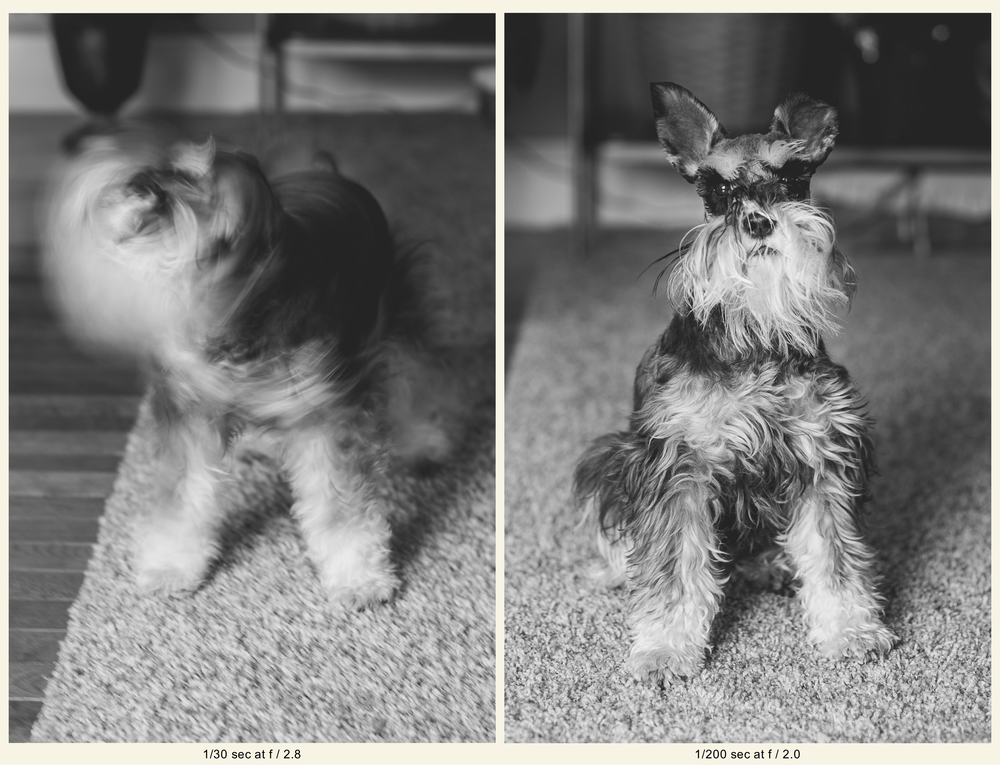
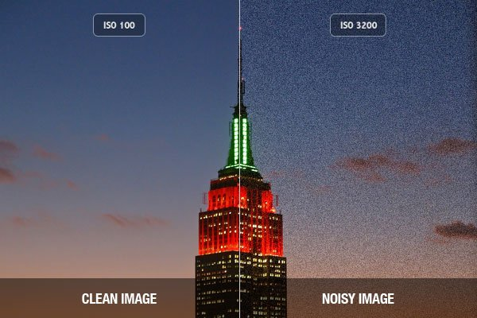

The basics of shutter speed, appeture, iso, and understanding your lighting situation!
Basics of Shutter Speed
The first step to dialing in you camer settings is finding your shutter speed.
Shutter speed is the time it takes for the shutter to open and close, exposing the camera sensor to what is in frame.
Shutter speed is the most important aspect of dialing in your settings.
Shutter speed is meassured in fractions of seconds, for example the human eye sees an equivalent to 1/60th shutter speed(pronounced 1 over 60).
Shutter speed is the aspect of your setting that controls how still the image is.
A slower shutter speed can be a bit blurry with motion, thought a higher shutter speed can completely stop motion.
A fast shutter speed(bigger denominator) like 1/1000 can completely stop rain in the air, dust on the ground, or even a car moving hundreds of miles per houw.
A good way to determine what your shutter speed needs to be is by thinking about motion.
If the subject of your photo is still, you can get away with a lower shutter speed like 1/60.
If the subject of your shot is in motion, you will want at least 1/125 shutter speed.
This is the low end for photos that are NOT on a tripod and of a moving subject.
If the subject of your photo is moving ver fast, like a football player running for the endzone, you will want a higher shutter speed.
A good shutter speed for sports is 1/1000, and many photographers will go up to 1/4000.
Reminder, this means the shutter opens and closes for one four-thousandth of a second.
Now that you have your shutter speed picked out, let's figure out apeture!

Basics of Appeture
Your appeture is essentially how open the iris of your camera is.
Appeture is also the setting that conrols how blurry the background(and foreground) of the photo are.
Most decent lenses have an apeture at least as low as 2.8, some going as low as 1.2.
The lower your appeture, the blurrier the background.
When your appeture is as low as possible, this is known as shooting wide open.
Shooting wide open means that the iris of your lens is - literally - as wide open as it can go.
Opening up your iris(lowering your appeture) also allows more light in, with the entire lens taking in light, whereas shooting with a higher appeture closes the iris, allowing less light into the camera.
When shooting at a higher appeture, you have to make sure that the image does not get too dark.
If your image is too dark, you can do one of two things.
You can lower your shutter speed.
This allows the shutter to stay open for longer, exposing the sensor to the light of the image for longer.
You can raise your iso. In the next section, we will cover what your iso is, and the limitations of adjusting it.
Basics of ISO
Iso(pronounced either EYE-so or I S O) is the easiest concept in camera settings, though is very complicated behind the scenes.
Higher iso increases the brightness of the photo, but also increases the noise or grain.
To a point, this is fine.
In outoor photography where lighting is out of control, iso is normally the most adjusted setting, with it not affect style to much whereas shutter speed and appeture completely change the final image.
Most studio photographers keep their iso as low as possible, bringing in the least amount of grain.
This creates the least noise and cleanest image possible.
Raising your iso too high can ruin the photo though, so be careful and only raise it to a safe amount, on most cameras this could be 800 or 1600, but on higher end professional camera up to 12,800.

Selecting Your Style
There are a lot of rules in photography that normally should not be broken, but in a creative space it is OKAY to break rules, as long as you know what rule you're breaking and you're breaking the rule with a purpose.
Although having a slow shutter speed can make a photo less crisp and sharp, sometimes the motion blur can help tell a better story, showing the motion and pace of the action being captured.
It is important for a beginner photographer to break all these rules and make mistakes throughout the process to learn how to manipulate their settings and find their own creative style.